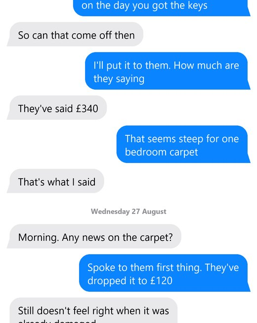

Film a conversation on your own phone. TextProof turns the recording into a timestamped, print-ready document you can hand to a landlord, an insurer or a solicitor — without a single message leaving your device.
Coming to the App Store · £9.99 one-off, no subscription
No cable, no computer, no backup file to wrestle with. If you can record your screen, you can use this.
Open the conversation, start your iPhone's screen recording, and scroll slowly to the bottom. The app walks you through it the first time.
Pick the video. TextProof reads every screen, stitches the conversation back together and works out who said what.
Tap any line to correct it, then export in whichever format you need.
DaveThat carpet was already marked when I moved in
DaveI sent photos on the first day, remember
YouI do remember. You sent them the day you got the keys
YouThey have dropped the deduction entirely
A printable document with a cover sheet, the dates that were on screen, and a fingerprint.
| date | time | sender | message |
|---|---|---|---|
| 2026-08-26 | 09:14 | Dave | That carpet was already marked |
| 2026-08-26 | 09:15 | Dave | I sent photos on the first day |
| 2026-08-26 | 09:21 | You | I do remember. You sent them the day… |
| 2026-08-27 | 11:02 | Dave | Still does not feel right |
| 2026-08-28 | 16:40 | You | They have dropped the deduction entirely |
Opens in Excel or Numbers. One row per message, for sorting and searching.
--- Tuesday 26 August ---
[09:14] Dave: That carpet was already marked
[09:15] Dave: I sent photos on the first day
[09:21] You : I do remember. You sent them the
day you got the keys
--- Thursday 28 August ---
[16:40] You : They have dropped the deduction
entirely
Plain text, for pasting into an email or a statement.

Not typed up. These are the captured images, trimmed only where they overlapped so that nothing is shown twice.
No text has been recognised, re-typed or interpreted, and nothing within any image has been altered.
For when you would rather show the original than a transcription of it.
A record you might hand to a solicitor should be able to account for itself. Every judgement this app makes ends up visible in the document.
The front page states how many readings were taken off your screen, how many were printed as messages, and how many were set aside. You can add them up and check.
Everything it read and decided was not a message is listed at the back of the document. Nothing is discarded silently, so nothing can go missing without trace.
Times and dates appear only where they were actually visible on screen. Where iOS did not show one, the document says so instead of guessing.
A checksum on the cover sheet, so a document can be shown to be the one that was produced, unchanged since.
No account, no upload, no servers, no analytics. The reading happens on the device using Apple's own text recognition. There is nowhere for your conversation to go.
Notes on the decisions behind the app — including the ones that cost us features.
Every competitor that syncs has a server holding your messages. We looked at what that would buy us and decided against it permanently.
Read → DesignThe hardest decision in the app was making it say when it could not be certain, instead of quietly closing the gap.
Read → PricingYou need this app during a bad month, not forever. Charging monthly for that would be charging rent on a problem you are trying to end.
Read →One conversation exports free, in full quality, with no watermark — so you see the actual document before deciding.
Yes. It reads what is on your screen, so it works with any messaging app — WhatsApp, iMessage, SMS, anything you can film. That is the advantage of doing it this way rather than reading a backup file.
If the picture has writing on it — a poster, a screenshot, a photo of a letter — the app reads that writing too, and cannot always tell it from a message. Tap any line you did not send to remove it before exporting. Ordinary conversations rarely need this.
That is not ours to promise, and we will not pretend otherwise. Whether any document is accepted in any process is a decision for the people running that process. What we can say is that the export is complete, timestamped, print-ready and fingerprinted. Keep the original recording alongside it — that is the primary record.
No, and we could not if we wanted to. There is no server. The app has no network code in it at all. Your recording is read on your own phone by Apple's built-in text recognition, and the result stays there until you choose to share it.
The transcript goes, and so do the captured pictures of the conversation. Both, from the phone, permanently. There is nothing held anywhere else to delete.